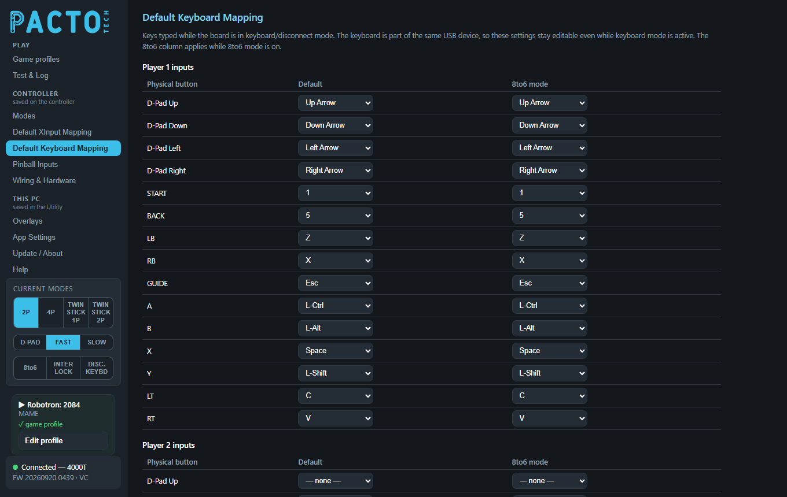
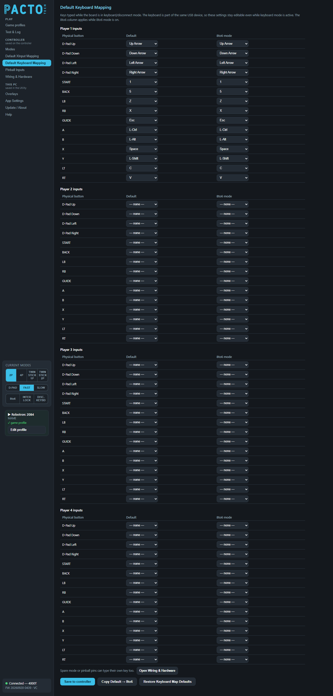

Choose which key each arcade control types while the board is in keyboard / disconnect mode.

In keyboard / disconnect mode, the board's Xbox controllers are removed from the PC completely (not just muted).
Your arcade controls then type the keys set on this page, like a normal USB keyboard. At the same time, the
DongleMaster USB port switches on the gamepads or wireless dongle plugged into it, and those take over as the game
controllers. On 4-player boards the DongleMaster is powered only in this mode. On 1- and 2-player boards it is also
powered in arcade mode, where the pads become players 3 and up. The 4000H2 switches its own USB ports instead of
using a DongleMaster. When switching, Windows needs about 12.5 seconds to forget the old controllers, so the
switch shows a countdown. You can switch with a button shortcut, the board's DIS input on boards that support it,
the DISC. KEYBD button in the sidebar, or a game profile whose Mode is KEYBOARD. See
Modes.
There is one table for each player position on your board, headed Player 1 inputs,
Player 2 inputs and so on. The tables follow the physical control positions from left to right, so
Player 1 inputs is the left-most set of controls. They don't change when the player order of the
current mode changes.
| Column | Meaning |
|---|---|
Physical button | The control on the cabinet: D-Pad Up, D-Pad Down, D-Pad Left, D-Pad Right, START, BACK, LB, RB, GUIDE, A, B, X, Y, LT, RT. Boards with stick-click buttons also list LS (stick click) and RS (stick click). |
Default | The key it types in normal play. |
8to6 mode | The key it types while 8-to-6 mode is on. |
Each drop-down holds these keys:
| Group | Keys |
|---|---|
| No key | — none — (the control types nothing) |
| Letters and numbers | A–Z, 1–9, 0 |
| Editing and arrows | Enter, Esc, Backspace, Tab, Space, Minus, Equals, Up Arrow, Down Arrow, Left Arrow, Right Arrow |
| Function keys | F1–F24 |
| Keypad | Keypad 0–Keypad 9, Keypad ., Keypad /, Keypad *, Keypad -, Keypad +, Keypad Enter |
| Modifiers | L-Ctrl, L-Shift, L-Alt, L-GUI, R-Ctrl, R-Shift, R-Alt, R-GUI |
A new board uses MAME's default keys. Because of that, keyboard mode works in MAME and most front ends without changing anything. The stick-click buttons have no key by default.
| Control | MAME player 1 | MAME player 2 | MAME player 3 | MAME player 4 |
|---|---|---|---|---|
| Up / Down / Left / Right | Arrow keys | R F D G | I K J L | Keypad 8 2 4 6 |
| START | 1 | 2 | 3 | 4 |
| BACK (coin) | 5 | 6 | 7 | 8 |
| A | L-Ctrl | A | R-Ctrl | Keypad 0 |
| B | L-Alt | S | R-Shift | Keypad . |
| X | Space | Q | Enter | Keypad Enter |
| Y | L-Shift | W | O | M |
| LB / RB | Z / X | E / F13 | F16 / F17 | F20 / F21 |
| LT / RT | C / V | F14 / F15 | F18 / F19 | F22 / F23 |
| GUIDE | Esc | Esc | Esc | Esc |
Which set each table starts with depends on the board:
| Board | Factory key sets |
|---|---|
| 1- and 2-player boards | Player 1 inputs = MAME player 1, Player 2 inputs = MAME player 2. |
| 3- and 4-player boards | Set up for the default 2-player order (3-1-2-4), where players 1 and 2 are in the middle:
Player 1 inputs (left-most) = MAME player 3, Player 2 inputs = MAME player 1,
Player 3 inputs = MAME player 2, Player 4 inputs (right-most, 4-player boards) = MAME player 4. |
The 8to6 mode column is a second key map that is used only while 8-to-6 mode is on. Out of the box it
holds the same keys as Default. To build an 8-to-6 key map, start with Copy Default → 8to6
and then change the keys you want.
Spare mode or pinball pins can type their own key too. That is set in the Types key (keyboard mode)
column of Spare pins as player buttons on Wiring & Hardware. The line
Spare mode or pinball pins can type their own key too. under the key tables has an
Open Wiring & Hardware button that takes you there.

| Button | What it does |
|---|---|
Save to controller | Writes your key changes to the board. The board keeps them after power-off. Saved appears when it's done. |
Copy Default → 8to6 | Copies every player's Default keys into the 8to6 mode column. Click Save to controller to keep it. |
Restore Keyboard Map Defaults | Puts the factory keys back in both columns of every table. Click Save to controller to keep them. |
If you leave the page with unsaved changes, the Utility asks whether to Save or Discard them.
Back up settings to file (on App Settings) does
not include the key maps. If you change a lot of keys, note them down.Nothing to change. The factory keys are MAME's defaults. The controls set up as MAME player 1 type the arrow keys,
1 for start, 5 for coin and L-Ctrl L-Alt Space
L-Shift Z X for the buttons. GUIDE types Esc, which quits MAME.
If your front end expects Enter to launch a game, find the table for the controls you use in the
menus. Set its START to Enter in both the Default and
8to6 mode columns, then click Save to controller. That START stops typing its old key.
If a game still needs that key, map it to another control.
See the example on Wiring & Hardware: free the pin, tick it in
the spare-pins table and pick a key under Types key.